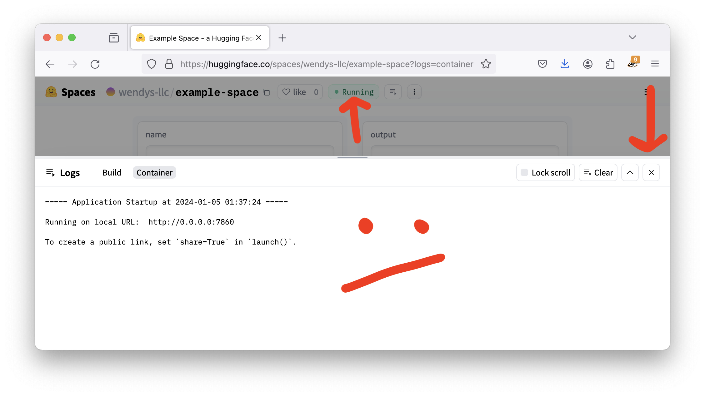
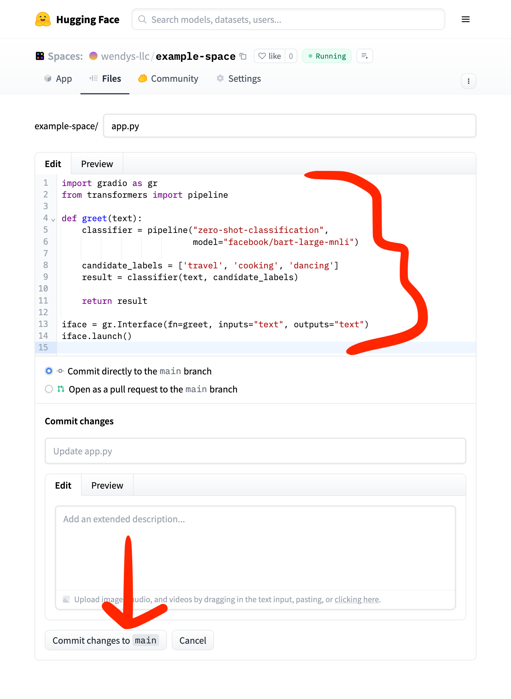
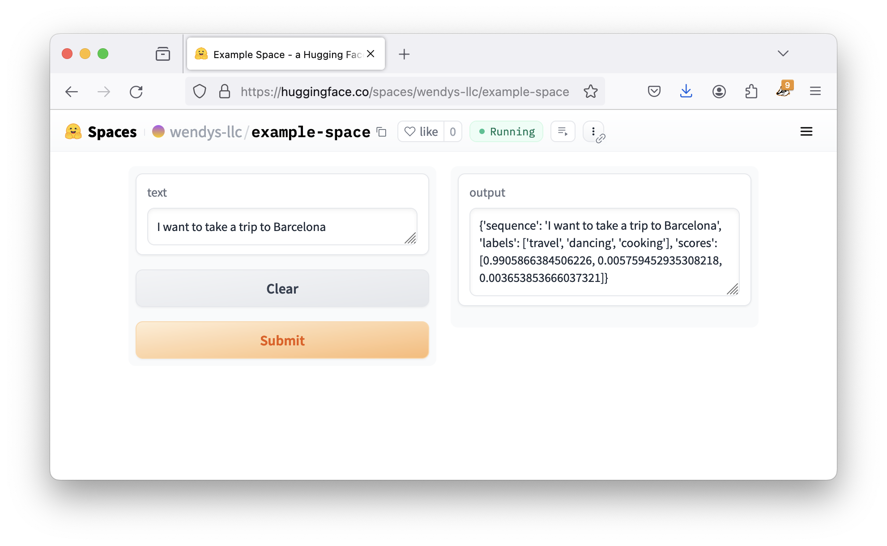
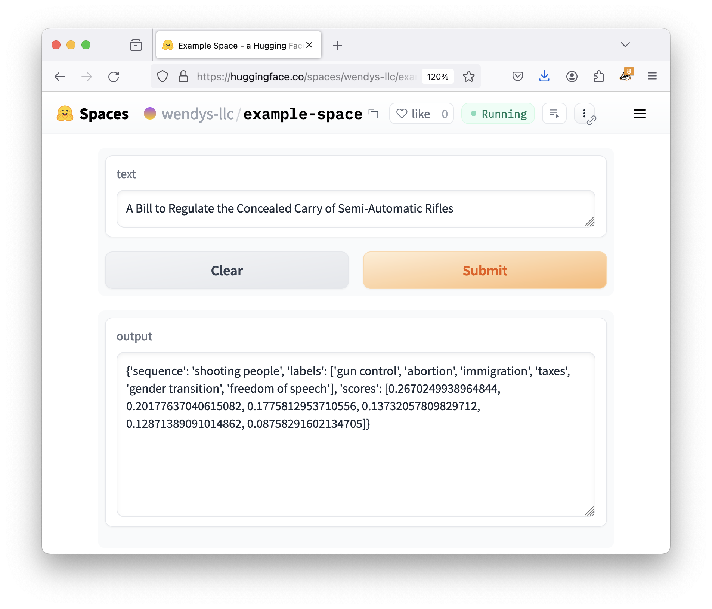

Building a custom demo for an AI model
In the previous section we looked at how to use the default interface for building an AI demo in Hugging Face Spaces. We didn’t think too hard and didn’t change too much - we just wanted to get something running!
This multi-step tutorial is going to walk through creating a custom demo app with Gradio, the framework that we used in the previous step to interact with the AI model. Eventually we’ll build a free tool that transcribes our speech and translates it into another language!
If you’re just looking to get up and running without much thought, an alternative to this tutorial is the Gradio templates page (…but when you run into problems you’ll probably come back to this one!)
Creating a new space
Start by visiting the Hugging Face Spaces homepage and selecting Create new Space button.
Once you’re there, add a name to your space and select Gradio. All of the other defaults are fine.
By default we are using the CPU basic tier, which makes all of our AI work pretty slow. It’s free, though, so we can’t complain!
When you’re done completing the form, click Create Space.
Setting up your app.py file
Once you create your space, you’re given a lot of options about how to set it up. It even gives us example code for a Gradio app!
import gradio as gr
def greet(name):
return "Hello " + name + "!!"
iface = gr.Interface(fn=greet, inputs="text", outputs="text")
iface.launch()If we were cool programmers we might know what to do with this code, but we aren’t. We’re just geniuses in training! So instead of being comforted, all this code and commands and blah blah blah makes us a little confused.
But we bravely scroll down and find the button we’re looking for:
(Hint: Create the app.py file right in your browser alternatively)
Let’s click that.
This screen allows us to create a new file called app.py. We’ll listen to directions and paste the the example code from Hugging Face into the text box.
Then we scroll down and click Commit new file to main, which honestly just means “save.”
Using the app
When we finish saving your file, Hugging Face dumps us at a page to just look at the text of our file again. It’s pretty boring.
But notice one tiny thing up at the top of the page: Building!
Any time you see Building it means Hugging Face is trying to start running our app. Sometimes it takes a little while!
In the meantime we can click the App link on the top left. This moves us from looking at the text of app.py to actually looking at our Gradio application.
If our app is still building the page will still say Building, but once it’s done it will say Running. It also might show you a bunch of text about the setup process. You can just click the X on the right to close that window!

And there you go! A beautiful app that… says hello to you.
Let’s see how we made this magical beast.
Reading our code
The code for the demo so far is pretty simple, so let’s take a second to look through it. Even if we aren’t Python programmers we can probably make some sense of it.
import gradio as gr
def greet(name):
return "Hello " + name + "!!"
iface = gr.Interface(fn=greet, inputs="text", outputs="text")
iface.launch()We can see:
- Gradio builds an interface for our demo using
gr.Interface. This interface is what we’re looking at on the screen. - The interface has one text input and one text output. In our case, “Soma” is the input and “Hello Soma!!” is the output.
fn=greetmeans that every time you click the Submit button, your interface runs the code indented afterdef greet.
Whether this makes sense or not, we can all agree that saying hello doesn’t seem like an advanced technological feat. Let’s see how to hook it into an actual AI tool.
Adding an AI model
Almost every model page has a tiny piece of “how to use this” code. We’re especially looking for the examples that include a pipeline, as they’re easiest to build into our demos.
For example, if we scroll down on the facebook/bart-large-mnli page (the model we used last time to categorize text) we can see some reasonably-simple looking code:
The code has two sections – the first snippet creates the classifier and the second snippet uses it.
The model can be loaded with the zero-shot-classification pipeline like so:
from transformers import pipeline classifier = pipeline("zero-shot-classification", model="facebook/bart-large-mnli")You can then use this pipeline to classify sequences into any of the class names you specify.
sequence_to_classify = "one day I will see the world" candidate_labels = ['travel', 'cooking', 'dancing'] classifier(sequence_to_classify, candidate_labels) #{'labels': ['travel', 'dancing', 'cooking'], # 'scores': [0.9938651323318481, 0.0032737774308770895, 0.002861034357920289], # 'sequence': 'one day I will see the world'}
In this example snippet, the model predicts that “one day I will see the world” has a 99.4% chance of being about travel. That seems reasonable and potentially useful, so let’s steal the code and add it into our demo!
Incorporating the AI code
We’ll incorporate the code in two steps:
- First, we’ll copy all of those “how to use” pieces of code into the
greetsection (technically this chunk of code is called a function, so let’s start calling it that). - Then we’ll adapt the code to work with the
greetfunction.
After those two steps, the final result looks something like this:
import gradio as gr
from transformers import pipeline
def do_action(text):
classifier = pipeline("zero-shot-classification",
model="facebook/bart-large-mnli")
candidate_labels = ['travel', 'cooking', 'dancing']
result = classifier(text, candidate_labels)
return result
iface = gr.Interface(fn=do_action, inputs="text", outputs="text")
iface.launch()The biggest changes are highlighted.
- We added the
importup top to bring in the “pipeline” code. Imports always go up top. - We renamed
greettodo_actionsince we aren’t going to be saying hello any more. - We renamed
nametotextsince we aren’t going to be dealing with names. - We used the classifier on
textand saved the result to a variable called…result - We used
returnto send this result back to the interface.
For now, deep understanding of the changes aren’t too important. We’ll understand more and more as we use and change the code!
To use this new code, we need to edit our application file. From your demo’s homepage, click Files on the top bar, select app.py, then click the edit icon.
Once the file editor comes up, paste in the updated code and click Commit changes to main (again, that just means “save”).

Dealing with an error
We did our best to follow instructions and cut and paste correctly, but something terrible has happened: our demo has broken!
We can tell because the badge that usually says “Building” or “Running” says Runtime error instead:
Any time errors show up your very first stop should be examining your Logs, which is where detailed error messages (and sometimes success stories) appear. Click the button to the right of “Runtime error” to open up your logs.
The error message in this case is a common Python issue: ModuleNotFoundError: No module named 'transformers'. This means we need to install the transformers library before our code can run successfully.
Transformers is the Python “gateway” between our code and the hundreds of AI models that live on Hugging Face. While our previous code worked without it, any time you want to do even vaguely custom AI work you probably need to install transformers.
Installing missing packages is a little different than it would be on your own computer: we need to add it to a file called requirements.txt. Go to the file browser, then click Add file and Create new file.
The new file should be called requirements.txt and include the following lines:
torch
transformersEven though it didn’t ask for the torch package I know it’s going to need it! When you’re done, click Commit new file to main down at the bottom.
Give it a minute or two to start up, and then you should be ready to roll!

Well, mostly. It gives us some results, they just happen to be ugly!
Improving our app
Right now the demo dumps a lot of information onto our user: the original sentence, a ranked list of potential categories, and the actual score of each of the categories. If we reformat it, the output looks like this:
{
'sequence': 'I want to take a trip to Barcelona',
'labels': ['travel', 'dancing', 'cooking'],
'scores': [0.9905866384506226, 0.005759452935308218, 0.003653853666037321]
}In this case, there’s a 99% chance the sentence is about travel, 0.57% chance it’s about dancing, and 0.37% chance it’s about cooking. Those aren’t necessarily the most journalistically-useful categories, so a good start for improving our app would be to make the categories more relevant!
If we’re bulding an app to filter through bills being proposed in the state legislature, we could adjust the candidate_labels to suggest some other options:
import gradio as gr
from transformers import pipeline
def do_action(text):
classifier = pipeline("zero-shot-classification",
model="facebook/bart-large-mnli")
candidate_labels = ['gun control', 'abortion', 'gender transition', 'freedom of speech', 'immigration', 'taxes']
result = classifier(text, candidate_labels)
return result
iface = gr.Interface(fn=do_action, inputs="text", outputs="text")
iface.launch()We’ll edit the same way we did last time: head back to the file browser, open (and edit) our app.py, save the changes, then click App to return to the “front page” of our demo and wait for the app to start up again.
If you get a big red Error when you try to click the Submit button, try refreshing!
Once it’s started up, give it a try to see how those new categories shape up.

Great work! We’ll use this foundation over the next two lessons to improve our app to be a true piece of magic.
Reflection
In this section we built a Gradio app on Hugging Face Spaces that used a zero-shot classification model to put pieces of text in different categories.
While we did this in a much more attractive way in the last section, this is the first step in exerting actual control over our demo. For instance, this version has the categories pre-set so the user doesn’t need to enter anything except the text they want categorized.
Skills-wise, we learned the basics of uploading and updating files on Spaces. Most of the more technical users will probably want to use tools like git (which Hugging Face suggested early on), but for simple projects it’s often easiest to just use the built-in file browser.
We also learned to pay attention to the build process (Building/Running/Runtime Error), how to troubleshoot errors by looking at the logs, and how to use requirements.txt to fix instances of missing modules.
Finally, we saw that all a Gradio app does is run a little snippet of code and display the results. Anything we put inside of that function gets run, and whatever we return gets displayed!
In the next section we’ll start customizing our app and trying different models, along with taking a look at Gradio inputs and outputs.